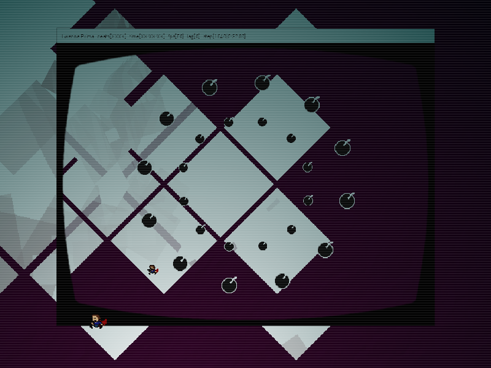
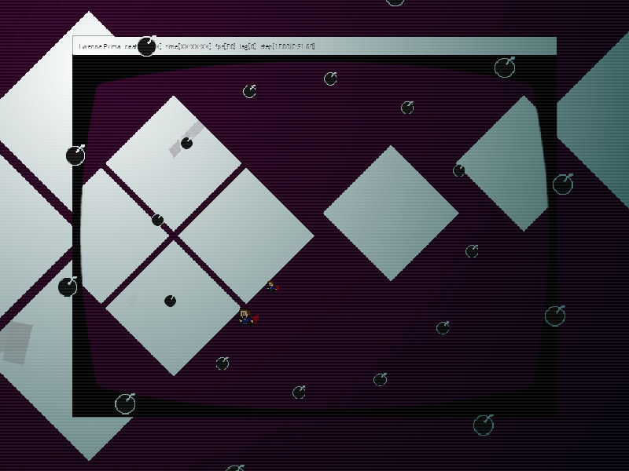
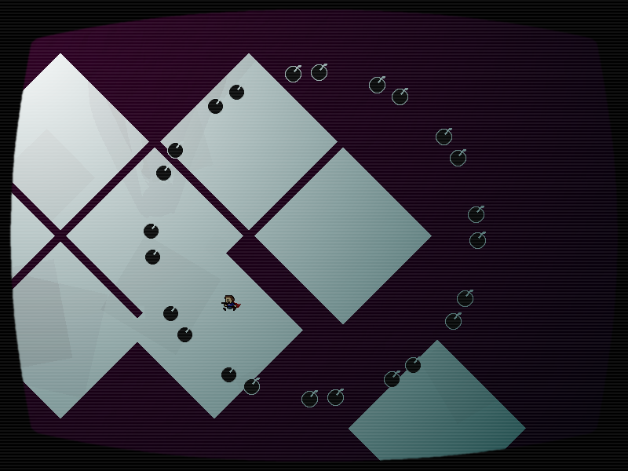

chapter3 - section2

| creator | segment | label | jump |
|---|---|---|---|
| yuzuyu(main) NN(original,supervise) |
0:30.60~0:33.80 | R | infinite |
2種類の角度と回転方向がランダムな弾幕です。
分裂する2つの画面において、それぞれに存在する円形弾幕は角度が独立してランダムであり、回転方向が異なり、半径が常に等しくなっています。
したがって、2つの画面に存在する円形弾幕を同時に回避する必要があります（fig.3-2.1.a~fig.3-2.1.c）。

